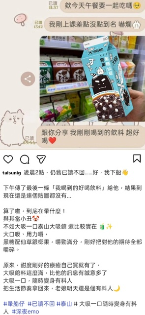
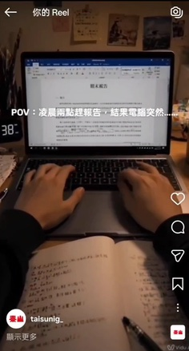
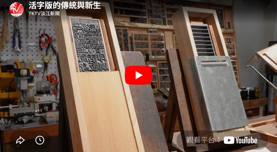
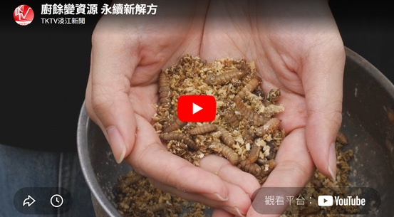
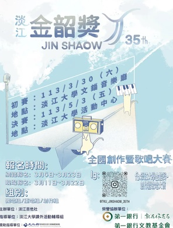
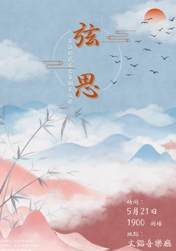
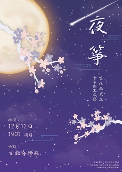
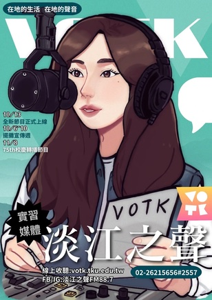
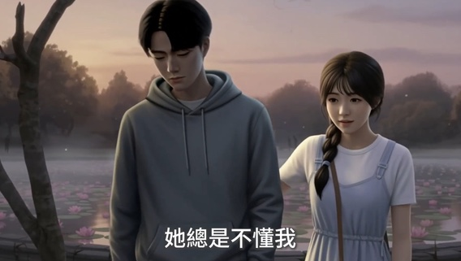

泰山大吸館｜AI 行銷企劃競賽
 ▶ 點我看完整簡報
▶ 點我看完整簡報- 任務
- 為品牌設計年輕化的行銷活動。
- 做法
- 以「不分時段，隨時有料！」為核心概念，規劃社群貼文、短影音與生活情境溝通。
- 成果
- 完成整體行銷企劃提案，含社群貼文與 AI 短影音。
- 能力
- 品牌概念、創意發想、社群內容、AI 影音。


企業要看的不是「我們做過什麼」，而是：問題是什麼、我們怎麼解、最後帶來什麼。以下精選幾個能代表我們能力的案例，點圖片可直接放大看。
▶ 點我看完整簡報

 ▶ 點我看競賽簡報
▶ 點我看競賽簡報 ▶
▶

主視覺與文宣設計，點海報放大看。





▶＊ 部分作品為競賽提案與校內實習媒體產出；社群數據取自團隊成員實際經營之帳號，可於洽談時提供連結與佐證。